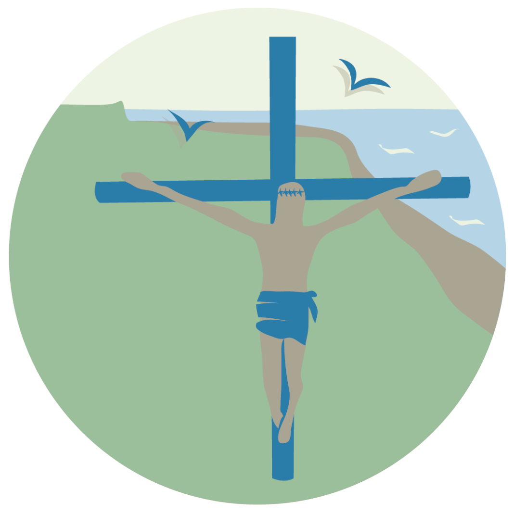

Sectores de la playa

Costa Norte

Monumento Malvinas

Punta Popper
- Se declaran tres áreas sensibles: Costa norte, Monumento Héroes de Malvinas y Punta Popper.
- Se establece un régimen de acceso, permanencia y tránsito en las áreas sensibles.
- Las actividades de deportes, turísticas e investigación deberán contar con autorización de la autoridad de aplicación.
- Se dota de presupuesto para personal de guardaparques para control y manejo de acciones que vayan en detrimento o cumplir el rol educativo en la atención de los visitantes.
- Las actividades extractivas e ingreso de especies exóticas se prohíben.